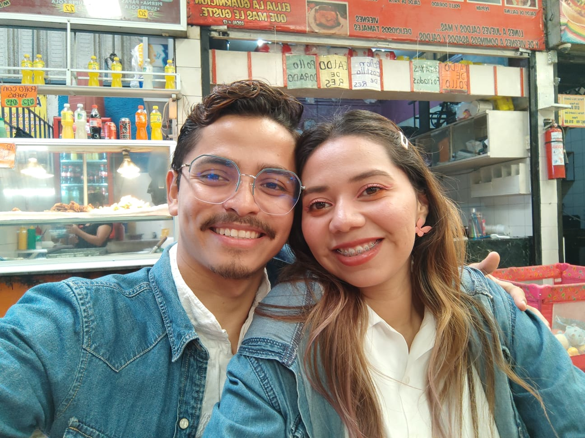

Oscar Vanegas | WDD 130
I'm Oscar Vanegas, I am 25 years old, I live in Villa Nueva, Guatemala but I'm from Managua, Nicaragua, I came to Guatemala to get married with Melani, my wife. I work as a scheduler of a clinic of doctors. I'm a very talkative person and I love spending time with my wife.